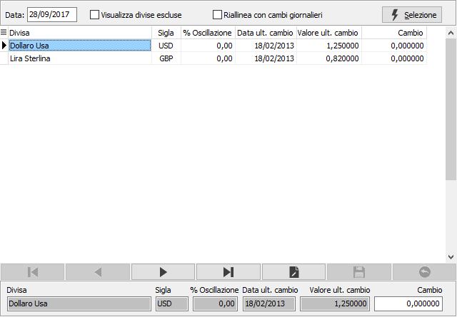

Cambi listini
La tabella “Cambi listini” permette di memorizzare i cambi delle divise estere da utilizzare in fase di generazione listini ed in fase di aggiornamento automatico listino per consentire di convertire in un unico passaggio il prezzo di acquisto in Euro ad un prezzo di vendita in divisa estera (o viceversa); in fase di generazione se la divisa del listino di origine e la divisa del listino di destinazione non coincidono viene effettuata la ricerca del cambio da applicare per la divisa di destinazione (il cambio listino più recente rispetto alla data di elaborazione).
Il programma,presenta la seguente maschera video:

Il cursore si posiziona sul campo data, dove è possibile confermare la data del giorno che viene presentata oppure inserire una data diversa; premendo il bottone Selezione, vengono visualizzate le divise attive con l’indicazione della data dell’ultimo cambio ed il valore dell’ultimo cambio: nel campo cambio è possibile digitate il cambio del giorno.
Normalmente vengono presentate le divise che vengono utilizzate, per le quali esiste un cambio precedente. Attivando la spunta nel check box “Visualizza divise escluse” prima di confermare la selezione, è tuttavia possibile visualizzare tutte le divise esistenti nell’omonima tabella per indicare il primo cambio a qualcuna di esse.
Attivando la spunta nel check box “Riallinea con cambi giornalieri” prima di confermare la selezione, viene "importata" la tabella cambi giornalieri della data selezionata; se fosse presente anche un cambio proprio dei listini questo verrebbe sovrascritto.